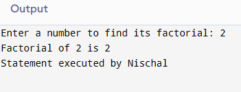
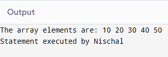
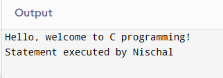
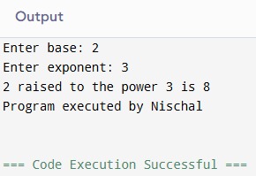
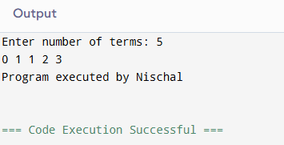
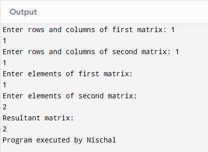
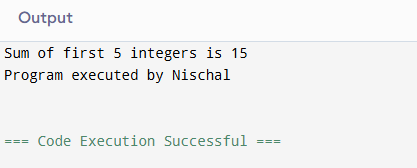

1. Working with a Function
a. Define Function
A function in C is a self-contained block of statements that perform a specific task. Functions help in breaking a program into smaller modules, which enhances code reusability, readability, and debugging.
b. Syntax of Functions
return_type function_name(parameter_list) {
// code block
}
c. Types of Functions
- Library Functions: Predefined functions in C standard library e.g. printf(),scanf.
- User-defined Functions: Functions created by the programmer for specific tasks.eg sum,power
d. Components of a Function
- Function Prototype: Declaration that informs the compiler about the function’s name, return type, and parameters.
- Function Call: Invokes the function to execute its task.
- Function Definition: Contains the actual code that runs when the function is called.
- Return Type: Data type of the value returned by the function e.g. int,void .
2. Categories of Function with Example
i. Function with Return Type but No Arguments
This function returns a value but does not receive any arguments from the calling function.
int getNumber() {
int x = 10;
return x;
}
ii. Function with Return Type with Arguments
Accepts input through arguments and returns a computed value.
int sum(int a, int b) {
return a + b;
}
iii. Function with No Return Type with No Arguments
Neither takes arguments nor returns a value. Used to execute code.
void greet() {
printf("Hello, World!");
}
iv. Function with No Return Type with Arguments
Takes inputs but does not return a value.
void printNumber(int num) {
printf("The number is %d", num);
}
3. Storage Classes in C
Storage classes define the scope, visibility, and lifetime of variables.
- Automatic: Default for local variables. Lifetime is within the block.
- External: Declared using extern, available across files.
- Register: Suggests storing variable in CPU register for quick access.
- Static: Retains value between function calls.
4. Recursive Function
A recursive function calls itself to solve smaller subproblems. Used for tasks like factorial, Fibonacci, etc.
#include
int factorial(int n) {
if(n == 0)
return 1;
else
return n * factorial(n - 1);
}
int main() {
int num;
printf("Enter a number to find its factorial: ");
scanf("%d", &num);
printf("Factorial of %d is %d\n", num, factorial(num));
printf("Statement executed by Nischal\n");
return 0;
}

5. Passing Array to a Function
Arrays are passed using their name (which acts as a pointer to the first element).
#include
void printArray(int arr[], int size) {
for(int i = 0; i < size; i++) {
printf("%d ", arr[i]);
}
printf("\n");
}
int main() {
int numbers[] = {10, 20, 30, 40, 50};
int size = sizeof(numbers) / sizeof(numbers[0]);
printf("The array elements are: ");
printArray(numbers, size);
printf("Statement executed by Nischal\n");
return 0;
}

Past Questions
1. Define a function and write a simple example.
#include <stdio.h>
void greet() {
printf("Hello, welcome to C programming!");
}
int main() {
greet();
printf("Statement executed by Nischal\n");
return 0;
}

2. To display power of given number.
#include
int power(int base, int exponent) {
int result = 1;
for(int i = 1; i <= exponent; i++) {
result *= base;
}
return result;
}
int main() {
int base, exponent, result;
printf("Enter base: ");
scanf("%d", &base);
printf("Enter exponent: ");
scanf("%d", &exponent);
result = power(base, exponent);
printf("%d raised to the power %d is %d\n", base, exponent, result);
printf("Program executed by Nischal\n");
return 0;
}

3.To generate fibonacci series.
#include
void generateFibonacci(int n) {
int a = 0, b = 1, next;
for(int i = 0; i < n; i++) {
printf("%d ", a);
next = a + b;
a = b;
b = next;
}
printf("\n");
}
int main() {
int n;
printf("Enter number of terms: ");
scanf("%d", &n);
generateFibonacci(n);
printf("Program executed by Nischal\n");
return 0;
}

4. To perform matrix multiplication.
#include
void multiplyMatrices(int a[10][10], int b[10][10], int result[10][10], int r1, int c1, int c2) {
for(int i = 0; i < r1; i++) {
for(int j = 0; j < c2; j++) {
result[i][j] = 0;
for(int k = 0; k < c1; k++) {
result[i][j] += a[i][k] * b[k][j];
}
}
}
}
int main() {
int a[10][10], b[10][10], result[10][10];
int r1, c1, r2, c2;
printf("Enter rows and columns of first matrix: ");
scanf("%d %d", &r1, &c1);
printf("Enter rows and columns of second matrix: ");
scanf("%d %d", &r2, &c2);
if(c1 != r2) {
printf("Matrix multiplication not possible\n");
return 0;
}
printf("Enter elements of first matrix:\n");
for(int i = 0; i < r1; i++)
for(int j = 0; j < c1; j++)
scanf("%d", &a[i][j]);
printf("Enter elements of second matrix:\n");
for(int i = 0; i < r2; i++)
for(int j = 0; j < c2; j++)
scanf("%d", &b[i][j]);
multiplyMatrices(a, b, result, r1, c1, c2);
printf("Resultant matrix:\n");
for(int i = 0; i < r1; i++) {
for(int j = 0; j < c2; j++) {
printf("%d ", result[i][j]);
}
printf("\n");
}
printf("Program executed by Nischal\n");
return 0;
}

5. To display sum of first 5 integers.
#include
int sumFirstFive() {
int sum = 0;
for(int i = 1; i <= 5; i++) {
sum += i;
}
return sum;
}
int main() {
int result = sumFirstFive();
printf("Sum of first 5 integers is %d\n", result);
printf("Program executed by Nischal\n");
return 0;
}
